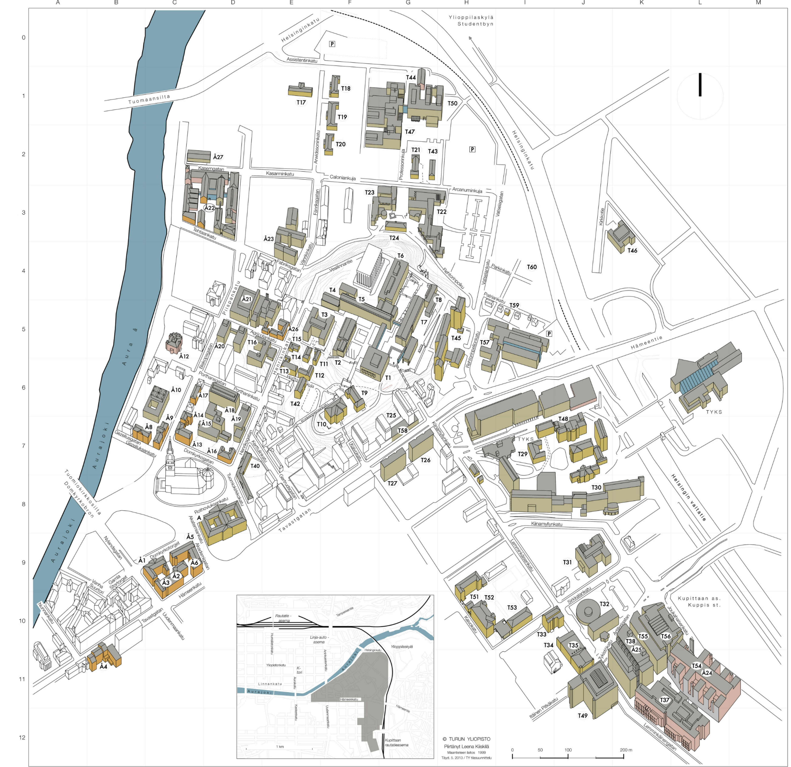

- T1 Päärakennus (F5)
- T2 Feeniks-kirjasto (F5)
- T3 Juslenia, Henrikinkatu 2 (E5)
- T4 Eläinmuseo (F5)
- T5 Natura (F5) ja Kasvimuseo (F4)
- T6 Agora (G4)
- T7 Quantum, fysiikan laitosrakennus (G5)
- T8 Quantum, keskustyöpaja (G5)
- T9 Rosetta, Koskenniemenkatu 4 (F6)
- T10 Signum, Koskenniemenkatu 4 (F6)
- T11 Humanistisen tiedekunnan kanslia, Horttokuja 2 (E5)
- T12 Kielikeskus, Horttokuja 2 (E6)
- T13 Henrikinkatu 4 b (E6)
- T14 Horttokuja 2 (E5)
- T15 Henrikinkatu 4 (E5)
- T16 Fennicum, Henrikinkatu 3 (E5)
- T17 Arwidssoninkatu 2, rak. 2 (E1)
- T18 Arwidssoninkatu 1, rak. 10 (F1)
- T19 Arwidssoninkatu 1, rak. 11 (F1)
- T20 Projektitiloja, Arwidssoninkatu 1, rak. 12 (F2)
- T21 Projektitiloja, Arcanuminkuja 3, rak. 24 (G2)
- T22 Arcanum, Arcanuminkuja 4 (G3)
- T23 Calonia, Caloniankuja 3 (G3)
- T24 Matthias, Professorinaukio, rak. 45 (G3)
- T25 Koulutussosiologian tutkimuskeskus, Hämeenkatu 1 (G7)
- T26 Projektitiloja, Hämeenkatu 2 (G7)
- T27 Projektitiloja, Hämeenkatu 4 (G7)
- T29 Turun yliopistollinen keskussairaala (TYKS) (H7)
- T30 Medisiina, Kiinamyllynkatu 10 (J8)
- T31 Mikro, Kiinamyllynkatu 13 (J9)
- T32 Dentalia, Lemminkäisenkatu 2 (J10)
- T33 Sanitas, Lemminkäisenkatu 1 (J10)
- T34 Verstas, Lemminkäisenkatu 1 (J10)
- T35 Teutori, Lemminkäisenkatu 3 (J11)
- T37 DataCity, Lemminkäisenkatu 14–18 (K12)
- T38 BioCity, Tykistökatu 6 (K11)
- T40 Maaherran makasiini, Henrikinkatu 10 (D7)
- T42 Vierastalo Villa Hortus, Horttokuja 3 (E6)
- T43 Projektitiloja, Arcanuminkuja 3, building 25 (G2)
- T44 Puutyöpaja, Kasarmialue, rak. 22 (G1)
- T45 Ylioppilastalot A–C, Rehtorinpellonkatu 4 (H5–6)
- T45 Turun yliopiston ylioppilaskunnan (TYY) toimisto, Ylioppilastalo A, Rehtorinpellonkatu 4 (H5–6)
- T45 Turun yliopiston ylioppilaskunnan (TYY) kirjasto, Ylioppilastalo B, Rehtorinpellonkatu 4 (H5–6)
- T46 Ylioppilaiden terveydenhoitosäätiö, YTHS, Kirkkotie 13 (K3)
- T47 Educarium, Assistentinkatu 5 (G1)
- T48 PET-keskus (J7)
- T49 PharmaCity, Itäinen Pitkäkatu 4 (J11)
- T50 Publicum, Assistentinkatu 7 (G1)
- T51 Historicum, Sirkkalan kasarmialue, Kaivokatu 12 (H10)
- T52 Minerva, Sirkkalan kasarmialue, Kaivokatu 12 (I10)
- T53 Artium, Sirkkalan kasarmialue, Kaivokatu 12 (H10)
- T54 ICT-City, Joukahaisenkatu 3–5 (L11)
- T55 ElectroCity, Tykistökatu 4 (K10)
- T56 EuroCity, Joukahaisenkatu 1 (K10)
- T57 Turun kauppakorkeakoulu, Rehtorinpellonkatu 3 (H5)
- T58 Turun kauppakorkeakoulu, vierashuoneet, Hämeenkatu 1 A, 6 krs (G7)
- T59 TuKY:n toimisto, Patriankatu 5 (I5)
- Å1 MHuvudbyggnaden, Domkyrkotorget 3 (C9)
- Å2 Gripen, Tavastgatan 13 (C9)
- Å3 Kosmorama, Domkyrkotorget 3 (C9)
- Å4 Kåren, Tavastgatan 22 (B11)
- Å5 Geologicum, Domkyrkotorget 1 (C9)
- Å6 Geotalo, Akademigatan 1 (C9)
- Å8 Domvillan, Gezeliusgatan 2 (B7)
- Å9 Tryckerihuset, Gezeliusgatan 2 (C7)
- Å10 Sibeliusmuseum, Biskopsgatan 17 (C6)
- Å12 Humanisticum, Biskopsgatan 13 (C5)
- Å13 Teologicum, Biskopsgatan 16 (C7)
- Å14 Teologiska annexet, Biskopsgatan 16 (C7)
- Å15 Boktornet, Domkyrkogatan 2–4 (D7)
- Å16 Reuterska huset, Henriksgatan 9 (D7)
- Å17 ”Ett hem”, Biskopsgatan 14 (C6)
- Å18 Gadolinia, Porthansgatan 3 (D6)
- Å19 Handelshögskolan, Henriksgatan 7 (D7)
- Å20 Domus, Biskopsgatan 10 (D5)
- Å21 Axelia I och Axelia II, Biskopsgatan 8 (D5)
- Å22 Arken, Fabriksgatan 2 (D3)
- Å23 ASA, Fänriksgatan 3 (E4)
- Å24 ICT-huset, Joukahainengatan 3 (L11)
- Å25 BioCity, Artillerigatan 6 (K11)
- Å26 Agricola, Henriksgatan 1 b (E5)
- Å27 Uniprint, Kaserngatan 2
- Turun akatemiatalon juhlasali - Gamla Akademihusets solennitetssal, Rothoviuksenkatu 2 - Rothoviusgatan (D8)
- Å26 Turun akateemiset rekrytointipalvelut - Åbo Akademis Arbetsforum (E5)
Numero suluissa osoittaa päärakennuksen sijainnin, mikäli rakennus sijaitsee usean ruudun alueella kartalla.
Löydä kaikki luentosalit täältä.
Tutustu yliopistoalueen esteettömyyteen täällä.